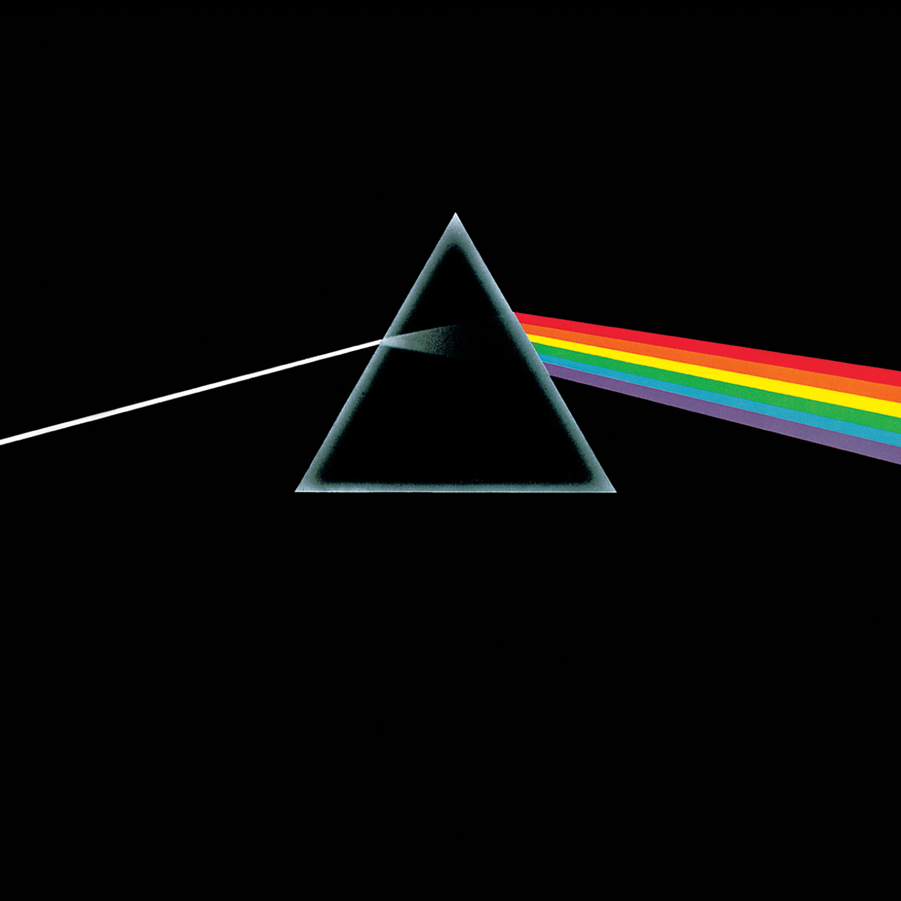

Pink Floyd
The Timeless Genius of Pink Floyd: A Study of Three Albums
Pink Floyd’s influence on the landscape of music is unparalleled, with their progressive and experimental approach redefining rock as an art form. Among their vast catalog, three albums—Wish You Were Here, The Dark Side of the Moon, and Animals—stand out as masterworks of creativity, introspection, and social commentary. Each represents a unique chapter in their career while collectively showcasing the band’s genius.

Wish You Were Here: A Tribute to Loss and Legacy
Wish You Were Here (1975) is a heartfelt exploration of absence, disillusionment, and longing. The album is deeply rooted in the band's sorrow over the mental decline of their former bandmate, Syd Barrett. The iconic "Shine On You Crazy Diamond," which bookends the album, is a haunting tribute to Barrett, blending soaring guitar solos with melancholy lyrics that capture both admiration and grief. "Welcome to the Machine" and "Have a Cigar" critique the dehumanizing nature of the music industry, reflecting Pink Floyd's own disillusionment with fame. The title track, "Wish You Were Here," resonates universally, encapsulating themes of alienation and yearning. This album is a poignant reminder of the fragility of brilliance and the enduring impact of loss.
The Dark Side of the Moon: A Journey Through the Human Condition
The Dark Side of the Moon (1973) is not just an album; it’s an auditory journey through the complexities of life and the human psyche. With themes ranging from time and mortality to greed and mental illness, it remains one of the most profound and accessible records in rock history. Songs like "Time" and "Money" dissect societal constructs and existential dilemmas, while "The Great Gig in the Sky" offers a wordless, emotive meditation on life and death. The album’s seamless transitions, intricate production, and use of innovative sound effects create a cohesive narrative that transcends its parts. Its enduring popularity and cultural significance are a testament to Pink Floyd's ability to connect deeply with listeners across generations.

Animals: A Scathing Social Critique
Inspired by George Orwell’s Animal Farm, Animals (1977) is a biting critique of class divisions, power dynamics, and societal corruption. The album divides humanity into three archetypes: dogs, pigs, and sheep, each representing a different facet of a broken system. "Dogs" portrays the ruthless and cunning, "Pigs (Three Different Ones)" skewers the corrupt and hypocritical elite, and "Sheep" depicts the oppressed masses who blindly follow authority. Musically, Animals is more aggressive and guitar-driven than its predecessors, with David Gilmour’s electrifying solos and Roger Waters’ biting lyrics taking center stage. This album is both a reflection of its turbulent times and a timeless reminder of the dangers of unchecked power and conformity.
Conclusion
Wish You Were Here, The Dark Side of the Moon, and Animals are more than just albums—they are immersive experiences that challenge, comfort, and inspire. Each record showcases a different facet of Pink Floyd’s artistry: the emotional depth of Wish You Were Here, the philosophical brilliance of The Dark Side of the Moon, and the sharp social commentary of Animals. Together, they form a trilogy of genius, cementing Pink Floyd’s legacy as one of the greatest bands in music history. These albums continue to resonate, reminding us of the power of music to explore and express the human experience.
Chronological Release & Highlights Across the Albums
- The Dark Side of the Moon (1973)
- Themes: Mortality, time, greed, mental health.
- Iconic tracks: "Time," "Money," "The Great Gig in the Sky."
- Known for: Seamless transitions, innovative sound effects, and universal appeal.
- Wish You Were Here (1975)
- Themes: Loss, disillusionment, and alienation.
- Iconic tracks: "Shine On You Crazy Diamond," "Wish You Were Here."
- Tribute to: Syd Barrett and critique of the music industry.
- Animals (1977)
- Themes: Power, class struggle, and societal corruption.
- Iconic tracks: "Dogs," "Pigs (Three Different Ones)," "Sheep."
- Inspired by: George Orwell’s Animal Farm.
Echoes of Pink Floyd
Wish You Were Here, a heartfelt plea,
For lost souls and fragility.
The Dark Side shines, where shadows play,
Life’s deep questions in a timeless sway.
Animals roar, with truths to expose,
A world of power, greed, and woes.